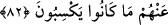

hayranlığın bir türlü dinmek bilmez. Bunları hiç hatırından çıkarmazsın. Şöyle güzeldi
böyle güzeldi diye ömrün boyunca anlatırsın. Oysa çok daha muazzam ve benzeri
yaratılmamış bir eve, yâni kâinâta bakıp duruyorsun ama onun hakkında hiç kelâm
etmiyorsun. Gönlün ona iltifat etmiyor; ondaki enteresan özellikler hakkında hiç
düşünmüyorsun! Bu durum, insanı müşâhede etmekten alıkoyan bir kalp körlüğünden
başka bir sebepten değildir. Ne güzel söylemişler:
Akıl sahipleri nazarında yeşil ağaç yaprağının her biri,
Yaratıcının mârifet defterinden bir varaktır.
Bu mertebeyi elde etmek için ona ulaştıran sebeplere yapışmak kaçınılmazdır.
Bunların en büyüğü de o Müfettihu’l-ebvâb’ı yâni bütün kapıları açanı, kapıyı açana
dek, her an zikretmektir.
82. Onlar yeryüzünde gezip dolaşmadılar mı ki, kendilerinden öncekilerin sonu
nasıl olmuştur, görsünler! Öncekiler bunlardan daha çoktu, kuvvetçe ve
yeryüzündeki eserleri bakımından da daha sağlam idiler. Fakat kazandıkları şeyler
onlara asla fayda vermemiştir.
“Onlar yeryüzünde” Âd ve Semud diyarında “dolaşmadılar mı ki,” yâni senin
kavmin olan Kureyş öylece oturup hiç yolculuğa çıkmadılar, hiç gezmediler mi ki,
“kendilerinden öncekilerin” Âd ve Semûd gibi helâk olmuş milletlerin “sonu nasıl
olmuştur, görsünler!” Görüp de ibret alsınlar. Bu son kısım sorunun cevabıdır.
“Öncekiler bunlardan daha çoktu, kuvvetçe ve yeryüzündeki eserleri bakımından da
daha sağlam idiler.”Bunlar (Kureyş), bölgenin çeşitli boylarına gidip dolaşıyorlardı.
Suriye ve Yemen taraflarına sefer düzenliyorlardı. Geçmiş milletlerden yalancı
olanların serildikleri yerleri, bıraktıkları kalıntıları gözlemliyorlardı. O halde ey
Muhammed! Böyle bir azaptan sakınsınlar da seni tekzip etmesinler!
Bunu belirttikten sonra geçmiş milletlerin başlarına gelenlerin niçin geldiğini, böyle
bir âkıbete niçin dûçar olduklarını göstermek üzere buyuruyor ki: Hem bu milletler,
senin kavminden sayıca daha fazla, yine sayıca ve bedenen senin kavminden daha güçlü
idi. Bıraktıkları bina, saray, masna‘ gibi kalıntılar bakımından da. Masna’ ve masnu’,
havuz gibi bir şey olup yağmur suları oraya toplanır. Yâni su tankı demektir. Buna
“sahrîc” de denir. Türk halkı buna genelde yanlış bir telaffuzla “sarnıç” derler.
Akarsuların ve kuyuların azlığı sebebiyle Arap kentlerinin çoğu böyle şeylere muhtaçtı.